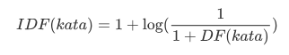
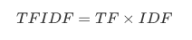

Text Extraction
Pada tahap ini, text yang diambil akan dilakukan ekstraksi teks. Terdapat beberapa tahapan, yaitu:
- Stopword Removal,
yaitu menghilangkan kata-kata dan tanda baca yang tidak penting, seperti "dan", "atau", "di", dsb.
- Stemming
yaitu mengubah suatu kata menjadi kata dasar, seperti kata "menggunakan" menjadi "guna", "memakan" menajadi "makan".
- Tokenisasi (n-gram)
yaitu memecah kalimat per kata, seperti "aku makan sayur", menjadi "aku", "makan", "sayur". Dalam tokenisasi ini, terdapat variasi jumlah kata yang dipecah. Misal dipecah menjadi 2 suku kata, seperti "aku makan sayur bayam", menjadi "aku makan", "makan sayur", "sayur bayam". Hal tersebut lebih dikenal sebagai n-gram
Ketiga tahapan di atas sudah saya pecah menjadi dua method berbeda seperti pada code di bawah.
def preprosesing(txt):
SWfactory = StopWordRemoverFactory()
stopword = SWfactory.create_stop_word_remover()
Sfactory = StemmerFactory()
stemmer = Sfactory.create_stemmer()
hasil = ''
for i in txt.split():
if i.isalpha():
# Menghilangkan Kata tidak penting
stop = stopword.remove(i)
stem = stemmer.stem(stop)
hasil += stem + ' '
return hasil
#VSM
def tokenisasi(txt, ngram=1):
token = []
start=0
end=ngram
txtSplit = txt.split()
while end <= len(txtSplit):
tmp = txtSplit[start:end]
frase = ''
for i in tmp:
frase += i+ ' '
token.append(frase)
end+=1; start +=1;
return token
Setelah ketiganya dilakukan, maka akan kita bisa membuat sebuah Vector Space Model, dengan menggunakan metode Bag of Words dan TF-IDF.
Metode Bag of Words
Bag of Words merupakan salah satu metode untuk membuat sebuah Vector Space Model (VSM) dengan cara menghitung setiap kata pada setiap dokumen. Contohnya seperti ini
doc 1 : "Topi saya bundar"
doc 2 : "Bundar topi saya. Kalau tidak bundar, bukan topi saya"
Kita akan menghitung setiap kata tersebut. Maka didapat VSM sebagai berikut:
| No Doc | Topi | Saya | Bundar | Kalau | Tidak | Bukan |
|---|---|---|---|---|---|---|
| 1 | 1 | 1 | 1 | 0 | 0 | 0 |
| 2 | 2 | 2 | 2 | 1 | 1 | 1 |
Code untuk melakukan perhitungan tersebut adalah sebagai berikut
def countWord(txt, ngram=1):
'''
Fungsi ini digunakan untuk menghitung setiap kata pada satu string
'''
d = dict()
token = tokenisasi(txt, ngram)
for i in token:
if d.get(i) == None:
d[i] = txt.count(i)
return d
def add_row_VSM(d):
'''
Fungsi ini digunakan untuk membangun VSM
'''
#init baris baru
VSM.append([])
# memasukkan kata berdasarkan kata yang telah ditemukan sebelumnya
for i in VSM[0]:
if d.get(i) == None:
VSM[-1].append(0)
else :
VSM[-1].append(d.pop(i));
# memasukkan kata baru
for i in d:
VSM[0].append(i) #fitur baru
for j in range(1, len(VSM)-1):
#VSM[j].insert(-2,0)
VSM[j].append(0)
VSM[-1].append(d.get(i))
Method counWord digunakan untuk menghitung banyaknya kata pada dokumen. Sementara method add_row_VSM digunakan untuk membuat sebuah matrix VSM tersebut.
Proses pemanggilan fungsi-fungsi di atas dilakukan oleh code di bawah ini:
cursor = conn.execute("SELECT * from jurnal2")
cursor = cursor.fetchall()
cursor = cursor[:60]
pertama = True
corpus = list()
label = list()
c=1
n = int(input("ngram : "))
#n=1
for row in cursor:
print ('Proses : %.2f' %((c/len(cursor))*100) + '%'); c+=1
label.append(row[-1])
txt = row[-2]
cleaned = preprosesing(txt)
cleaned = cleaned[:-1]
corpus.append(cleaned)
d = countWord(cleaned, n)
if pertama:
pertama = False
VSM = list((list(), list()))
for key in d:
VSM[0].append(key)
VSM[1].append(d[key])
else:
add_row_VSM(d)
Lalu untuk menampilkan hasilnya (agar terlihat rapi) maka kita export ke csv. Serta kita pisahkan antara kata-kata dengan nilainya:
write_csv("bow_manual_%d.csv"%n, VSM)
feature_name = VSM[0]
bow = np.array(VSM[1:])
TF-IDF
Selain menggunakan Bag of Words, kita juga bisa menggunakan metode TF-IDF. Hal ini karena Bag of Word memiliki kelemahan tersendiri.
TF-IDF sendiri merupakan kepanjangan dari Term Frequence (frekuensi Kata) dan Invers Document Frequence (invers frekuensi Dokumen). Rumus TF-IDF sendiri terbilang mudah karena hanya TFxIDF.
Kita telah mencari TF sebelumnya (yaitu Bag of Words), karena konsep keduanya yang memang sama. Sekarang kita tinggal mencari nilai IDF.
Untuk mendapatkan IDF, pertama kita perlu mencari DF (frekuensi Dokumen). Misalnya:
doc1 : Topi Saya Bundar, bundar topi saya
doc2 : Matahari itu terlihat bundar
Maka, bisa kita ketahui:
| Kata | Jumlah Dokumen yang memiliki kata tersebut (DF) |
|---|---|
| Topi | 1 |
| Saya | 1 |
| Bundar | 2 |
| Matahari | 1 |
| itu | 1 |
| terlihat | 1 |
Setelah itu, kita lakukan invers pada setiap kata:

Setelah ketemu, maka tinggal kita kalikan TFxIDF. Berikut code programnya:

df = list()
total_doc = bow.shape[0]
for kolom in range(len(bow[0])):
total = 0
for baris in range(len(bow)):
if (bow[baris, kolom] > 0):
total +=1
df.append(total)
df = np.array(df)
idf = list()
for i in df:
tmp = 1 + log10(total_doc/(1+i))
idf.append(tmp)
idf = np.array(idf)
tfidf = bow * idf